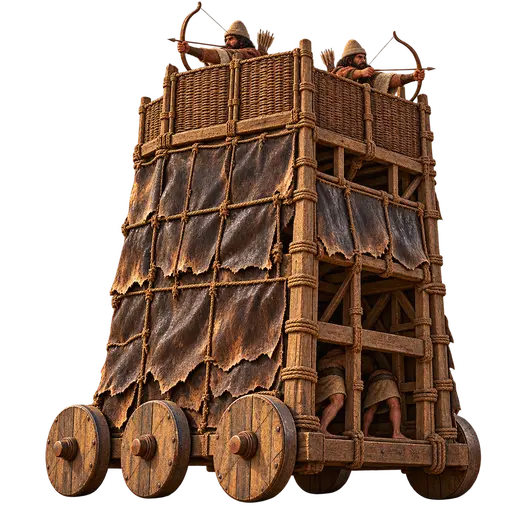
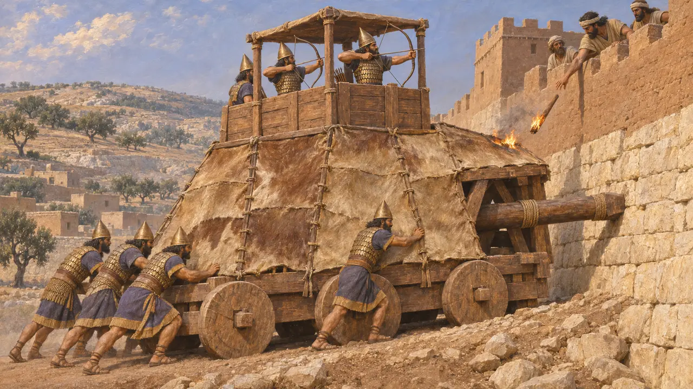
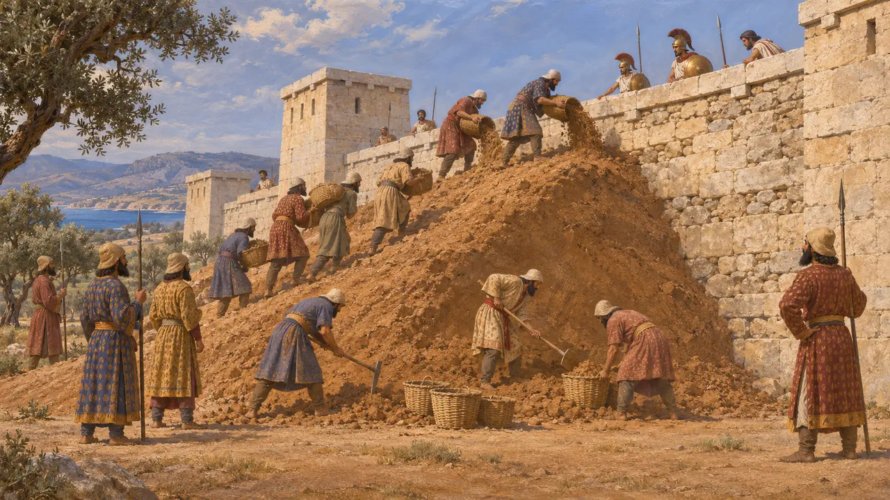
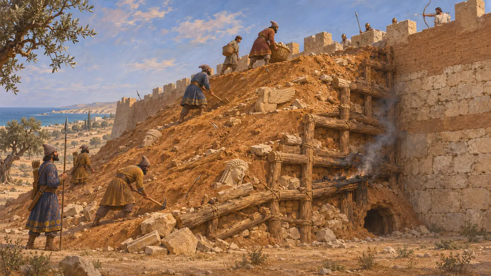
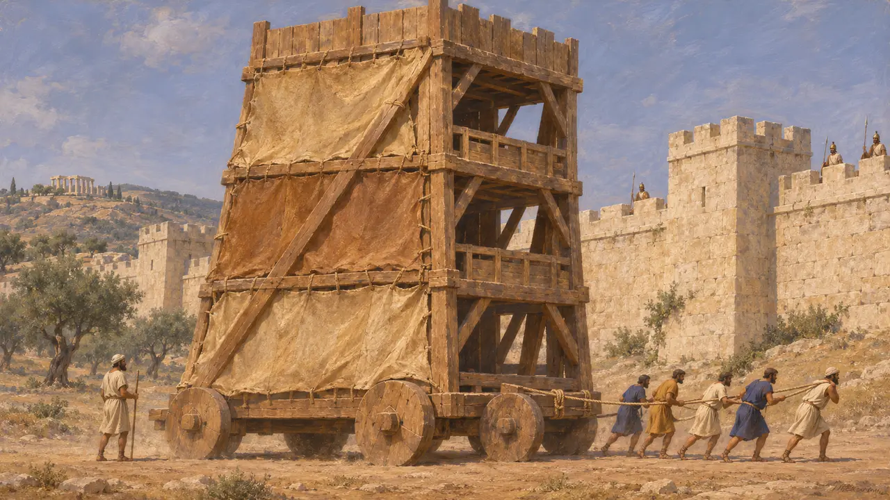
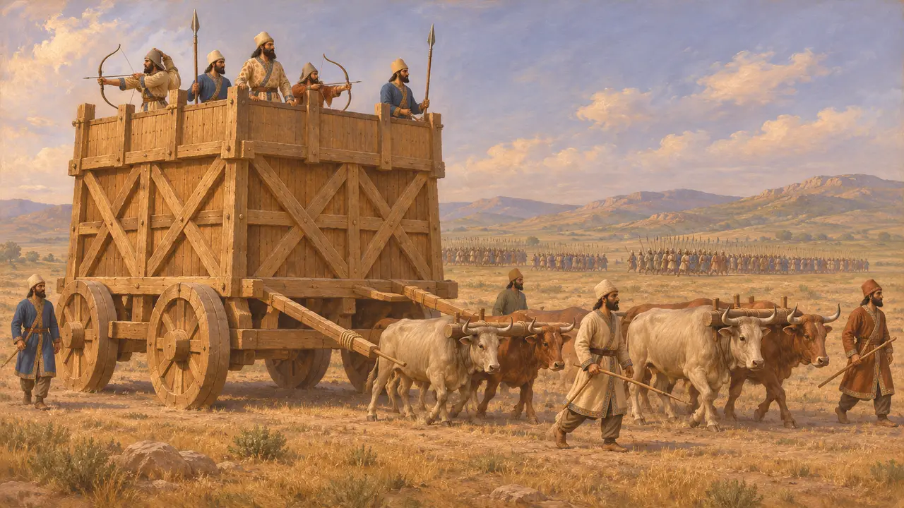

攻城塔
用于攻打城墙的带轮木制器械，近东与希腊，公元前9—前4世纪
攻城塔是一种带轮的木构架，被推至城墙边，让弓箭手居高临下射击守军，让士兵登上城垛。早在波斯人之前，亚述就已使用类似塔楼的攻城器械。然而对于公元前530至前479年的阿契美尼德战争，史料记载波斯军队攻城主要依靠土山、地道和不具名的器械，对攻城塔却没有明确记述。
游戏中： 游戏将攻城塔设为敌方器械，载有弓箭手并带有跳板，可用火攻或出城突击摧毁。据目前所知，公元前530至前479年间的叛军或希腊军队均未使用过攻城塔，因此该单位是一种简化。

波斯之前的亚述攻城器械
见于史载自公元前9世纪起的亚述宫殿浮雕上，可见前端装有撞槌、上方塔楼中立着弓箭手的带轮器械。尼尼微的辛那赫里布浮雕描绘了公元前701年对拉吉的围攻：这类器械被推上土坡逼近城墙，守军则从城上向它们投掷火把。在波斯人所继承的那个世界里，这些场景是塔状攻城器械最好的图像资料。
Lachish reliefs, South-West Palace, Nineveh; D. Ussishkin, The Conquest of Lachish by Sennacherib, 1982

波斯军队如何攻城
古代记述希罗多德称，哈尔帕哥斯约于公元前545年将守军围困城中，并在城墙外堆筑土丘，攻取了爱奥尼亚诸城。在利比亚的巴尔卡，波斯人挖掘了地道。公元前494年在米利都，他们掘毁城墙基础，并调来各式器械。在这些围城战中，他均未描述过可移动的塔楼。
Herodotus 1.162; Herodotus 4.200; Herodotus 6.18

帕福斯的攻城土坡
见于史载在塞浦路斯的旧帕福斯，考古学家发现了波斯人镇压塞浦路斯起义时紧贴城墙修筑的坡道，年代大约在公元前497年。坡道内填满碎石、残破的雕塑，以及数以百计的箭镞和其他投射物。守军在坡道下挖掘地道，并试图焚烧其中的木料，使之崩塌。希罗多德记述了波斯人围攻塞浦路斯诸城的经过，但没有描写帕福斯。
F. G. Maier and V. Karageorghis, Paphos: History and Archaeology, 1984; Herodotus 5.115

波斯人建造攻城塔吗
争夺中波斯人是否保有亚述式的攻城塔器械尚无定论。希罗多德用来指称米利都攻城器械的词语含义模糊，也没有任何阿契美尼德时期的图像或文字显示过移动攻城塔。高大的轮式攻城塔要到更晚的希腊史料中才有明确描述：公元前409年迦太基人攻打塞利努斯，以及公元前397年狄奥尼修斯攻打莫提亚。因此，许多历史学家认为攻城塔直到公元前400年前后才普及开来。
Diodorus 13.54; Diodorus 14.51; P. B. Kern, Ancient Siege Warfare, 1999

居鲁士的牛拉攻城塔
后世传说色诺芬的写作晚于居鲁士一个半世纪以上。他让居鲁士建造由成队公牛牵引的巨大轮式塔楼，载着战士投入野战。《居鲁士的教育》是一部关于理想君主的道德传奇。这一场景反映的多半是色诺芬本人时代的军事思想，而非来自公元前540年代的任何证据。
Xenophon, Cyropaedia 6.1
来源
- Herodotus, Histories
- F. G. Maier and V. Karageorghis, Paphos: History and Archaeology, 1984
- D. Ussishkin, The Conquest of Lachish by Sennacherib, 1982
- P. B. Kern, Ancient Siege Warfare, 1999
- Diodorus 13.54; 14.51
- Xenophon, Cyropaedia